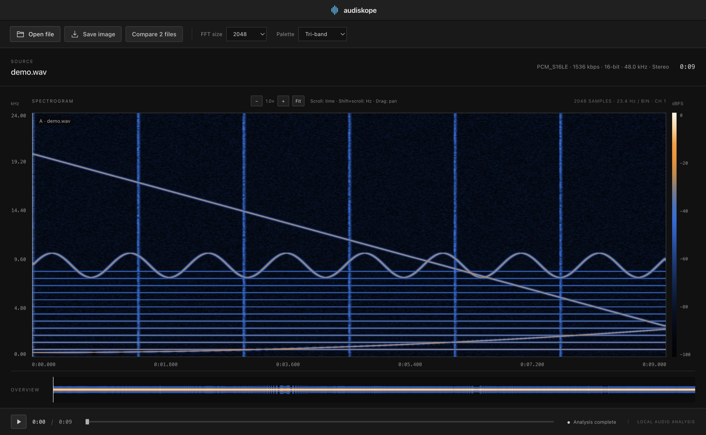

See what your audio
is actually made of.
A minimal desktop spectrogram analyzer. Open a file, read time, frequency and level under the cursor, and compare two files on shared axes.
GPL-3.0 · no account, no telemetry, no network access

Built for looking closely
Every file is decoded locally at its original sample rate. Nothing is uploaded, and source files are never modified.
GPU spectrogram
WebGL rendering with FFT sizes from 512 to 8192 and a Hann window. Intensity is stored at 16-bit precision, so quiet detail survives.
Zoom and inspect
Scroll to zoom time, Shift+scroll for frequency, drag to pan. The cursor reports exact time, frequency and level from the nearest FFT sample.
A/B comparison
Load two files into split view with shared time, frequency and FFT controls. Switching the audible source keeps the same absolute playback position.
Three palettes
Tri-band maps intensity from blue through amber to white. Ice and Fire are there too, and the player waveform follows whichever you pick.
PNG export
Save exactly what you are looking at — the current single or split view with its visible axes and a palette legend.
Offline by design
The renderer is sandboxed, navigation and popups are blocked, and the app makes no network requests at all.
Decoded by a bundled FFmpeg
These formats are covered by generated-file regression checks on every build:
The picker also accepts these, subject to the codec and stream being valid:
Get Audiskope
Installers are published with each release, alongside per-target license notices, a source archive and SHA-256 checksums.
xattr -dr com.apple.quarantine /Applications/Audiskope.app